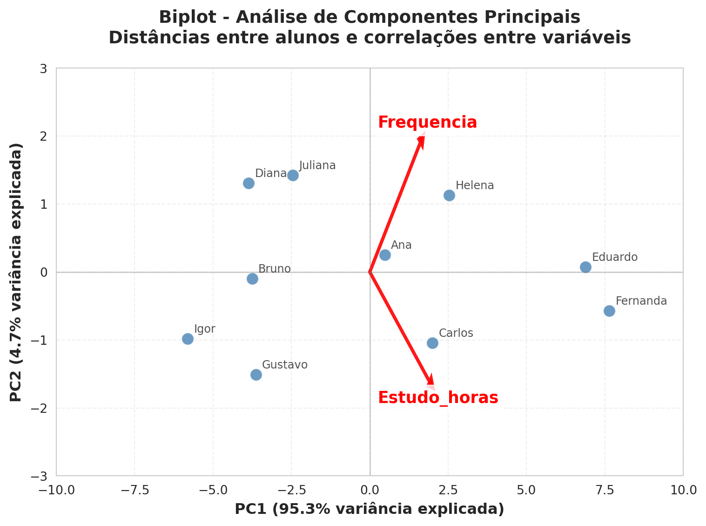

Introdução à Análise de Componentes Principais (PCA)
Ordenação
Introdução à PCA em Python.
Código
# Importação de bibliotecas essenciaisimport numpy as npimport pandas as pdimport matplotlib.pyplot as pltimport seaborn as snsfrom sklearn.preprocessing import StandardScalerfrom sklearn.decomposition import PCAfrom statsmodels.nonparametric.smoothers_lowess import lowessfrom scipy.stats import pearsonrfrom numpy.linalg import normfrom math import acos, degreesfrom IPython.display import Markdownfrom tabulate import tabulate
A Análise de Componentes Principais (PCA) é uma técnica multivariada utilizada para organizar e representar objetos (como locais de amostragem, estações, indivíduos, etc.) em um espaço de dimensões reduzidas. Seu objetivo é simplificar conjuntos de dados complexos, com muitas variáveis correlacionadas, transformando-os em um número menor de variáveis não correlacionadas, chamadas componentes principais. Essas componentes são combinações lineares das variáveis originais, ortogonais entre si e ordenadas pela quantidade de variância que explicam. A primeira componente captura a maior parte da variação, enquanto as seguintes representam a variância remanescente, em ordem decrescente. Assim, cada nova componente contribui com frações progressivamente menores da variabilidade total, até que as últimas retêm apenas pequenas parcelas da informação, muitas vezes associadas a ruído ou a variações de baixa relevância, que podem ser descartadas sem comprometer a identificação dos principais padrões de ordenação nos dados.
Ao identificar as direções de máxima variabilidade, a PCA projeta os dados nesses novos eixos, permitindo eliminar redundâncias, reduzir ruídos e destacar padrões relevantes. Isso é especialmente útil quando os objetos em estudo são descritos por um grande número de variáveis que podem ser correlacionadas entre si. Dessa forma, em vez de analisar separadamente gráficos de dispersão para todos os pares de variáveis, a PCA organiza os objetos em um espaço multidimensional e os projeta em gráficos bidimensionais ou tridimensionais, cujos eixos concentram grande parte da variabilidade total e facilitam a interpretação das relações e agrupamentos presentes nos dados.
Os eixos principais são ortogonais entre si, representando direções linearmente independentes.
Os autovalores (\(\lambda\)), que representam a variância ao longo de cada eixo, são sempre positivos ou nulos.
A técnica permite resumir, em poucas dimensões, a maior parte da variabilidade de uma matriz de dados com muitos descritores, além de medir a quantidade de variância explicada por esses eixos.
A PCA preserva a distância euclidiana entre os objetos, o que significa que a posição relativa entre eles não muda após a rotação dos eixos.
1 A Matemática da PCA
A PCA é definida como a análise de autovalores e autovetores de uma matriz de dispersão (covariância ou correlação).
1.1 A Matriz de Dados
Considere um conjunto de dados organizado em uma matriz \(\mathbf{Y}\), na qual as linhas representam \(n\) objetos (observações) e as colunas representam \(p\) descritores (variáveis). Para aplicar a PCA, o primeiro passo é centralizar os dados, subtraindo de cada valor a média de sua respectiva coluna. O resultado é a matriz \(\mathbf{Y_c}\).
Para ilustrar, vamos usar um exemplo didático com apenas duas variáveis, o que facilita compreender como a PCA transforma os dados em um novo espaço multidimensional. Nesse caso, cada aluno é descrito por duas informações: o tempo de estudo dedicado a uma determinada disciplina e a frequência em sala de aula, ambos expressos em horas.
A matriz de dados brutos \(\mathbf{Y}\) e a matriz centralizada \(\mathbf{Y}\) teriam o seguinte formato:
Matriz \(\mathbf{Y}\) (\(n \times p\)):
Código
Y = pd.read_csv('https://raw.githubusercontent.com/FCopf/datasets/refs/heads/main/Notas.csv')
Neste exemplo, a Frequência média em sala de aula é 35.5, enquanto o tempo de estudo médio por estudante é 8.8. Desta modo a matriz centralizada é expressa por:
A PCA opera sobre uma matriz de dispersão \(\mathbf{S}\), que pode ser uma matriz de covariância ou correlação. A matriz de covariância \(\mathbf{S}\) é calculada a partir dos dados centralizados \(\mathbf{Y_c}\):
Onde \(\mathbf{Y_c'}\) é a transposta de \(\mathbf{Y_c}\).
A matriz de covariância dos dados deste exemplo é dada por:
Código
S = Y_c[variaveis].cov(ddof=0)S
Frequencia
Estudo_horas
Frequencia
8.85
9.30
Estudo_horas
9.30
11.96
Nesta matriz, as diagonais representam as variâncias da frequência (\(s_{freq} = 8.85\)) e tempo de estudo (\(s_{estudo} = 11.96\)), enquando a covariância entre as variáveis é \(9.3\)
1.3 Autovalores e Autovetores da matris de covariância
Os eixos principais da matriz de dispersão \(\mathbf{S}\) são encontrados resolvendo a seguinte equação para os autovalores (\(\lambda\)) e autovetores (\(u\)):
\[(S - \lambda_k I)u_k = 0\]
Onde:
\(\lambda_k\) é o \(k\)-ésimo autovalor. Ele representa a quantidade de variância dos dados ao longo do \(k\)-ésimo eixo principal.
\(u_k\) é o \(k\)-ésimo autovetor associado a \(\lambda_k\). Ele define a direção do \(k\)-ésimo eixo principal.
\(I\) é uma matriz identidade.
Os autovalores são calculados a partir da equação característica:
\[|S - \lambda_k I| = 0\]
E neste exemplo os autovetores são:
Código
Ycv = Y_c[variaveis]pca_2d = PCA()pca_2d.fit(Ycv)autovalores = pca_2d.explained_variance_Lambda_list = autovalores.tolist()Lambda_formatada = [float(np.round(num,2)) for num in Lambda_list]R2 = Lambda_list / np.sum(Lambda_list)R2_formatada = [float(np.round(num,4)) for num in R2]R2_perc = [float(np.round(num*100,2)) for num in R2]
\(\Lambda = [22.04, 1.08]\)
A soma de todos os autovalores (\(\lambda_k\)) é igual à variância total dos dados, que é a soma dos elementos da diagonal da matriz \(\mathbf{S}\) (traço da matriz). A proporção da variância total explicada por um conjunto de \(m\) componentes principais é dada por:
No exemplo, o PC1 explica a maior parte da variância (\(\lambda_1 = 95.31\)%) e o PC2 explica o restante (\(\lambda_2 = 4.69\)%), somando 100%.
Os autovetores são então calculados e normalizados para terem comprimento unitário (\(u'u = 1\)). Eles formam as colunas da matriz \(\mathbf{U}\).
Código
U = pca_2d.components_U_df = pd.DataFrame({'Variveis': variaveis})U_df[['u1', 'u2']] = pd.DataFrame(U)U_df
Variveis
u1
u2
0
Frequencia
0.646175
0.763189
1
Estudo_horas
0.763189
-0.646175
Os elementos dos autovetores são também chamados de loadings (pesos) e indicam como cada variável original contribui para a formação de cada componente principal.
1.4 Componentes Principais (Scores)
Os componentes principais, também conhecidos como scores, são as coordenadas dos objetos no novo sistema de eixos. Eles são calculados projetando os dados centralizados nos autovetores. A posição de um objeto \(i\) no primeiro eixo principal é dada por:
Tabela 3: Matriz F contendo os scores dos componentes principais 1 e 2 para cada objeto da matriz original.
PCA1
PCA2
Ana
0.475725
0.252359
Helena
2.53127
1.13256
Diana
-3.86938
1.31068
Carlos
2.0021
-1.03999
Eduardo
6.87637
0.0742388
Fernanda
7.63956
-0.571936
Gustavo
-3.63535
-1.50805
Bruno
-3.75237
-0.0986816
Igor
-5.80791
-0.978884
Juliana
-2.46002
1.4277
As colunas da matriz F contêm os scores dos objetos (nas linhas) para cada componente principal e podem ser usadas para criar gráficos de ordenação, como os biplots.
2 Interpretando os Resultados da PCA: Biplots
Um biplot é um gráfico que exibe simultaneamente os objetos (scores, da matriz \(\mathbf{F}\)) e os descritores (loadings, da matriz \(\mathbf{U}\)). Existem duas formas principais de escalonamento (scaling) para biplots, cada uma com uma interpretação diferente.
2.1 Scaling 1 (Biplot de Distância)
Objetivo: Preservar a distância Euclidiana entre os objetos.
Matrizes: Usa os scores da matriz \(\mathbf{F}\) e os autovetores da matriz \(\mathbf{U}\) (comprimento 1).
Interpretação:
A distância entre os pontos dos objetos no gráfico aproxima a sua distância Euclidiana no espaço multidimensional.
A projeção ortogonal de um objeto sobre um eixo de descritor aproxima o valor daquele objeto para aquele descritor.
Os ângulos entre os vetores dos descritores não presenvam os ângulos entre os vetores originais.
Código
# Criar o biplotplt.figure(figsize=(8, 6))sns.set_style("whitegrid")# Plotar os objetos (alunos) usando o dataframe F_2dscatter = sns.scatterplot(data=F_2d, x='PCA1', y='PCA2', s=100, alpha=0.8, color='steelblue')# Adicionar labels para os alunosfor i, row in F_2d.iterrows(): plt.annotate(row['Nome'], (row['PCA1'], row['PCA2']), xytext=(5, 5), textcoords='offset points', fontsize=9, alpha=0.8, fontweight='medium')# Plotar os vetores das variáveis (loadings)scale_factor =2.5# Fator de escala para melhor visualizaçãofor i, var inenumerate(variaveis): plt.arrow(0, 0, U[0, i] * scale_factor, U[1, i] * scale_factor, head_width=0.15, head_length=0.15, fc='red', ec='red', linewidth=2.5, alpha=0.9) plt.text(U[0, i] * scale_factor *1.15, U[1, i] * scale_factor *1.15, var, color='red', fontsize=13, fontweight='bold', ha='center', va='center', bbox=dict(boxstyle="round,pad=0.3", facecolor='white', alpha=0.8))# Configurações do gráficoplt.axhline(y=0, color='gray', linestyle='-', alpha=0.4, linewidth=1)plt.axvline(x=0, color='gray', linestyle='-', alpha=0.4, linewidth=1)plt.xlabel(f'PC1 ({pca_2d.explained_variance_ratio_[0]*100:.1f}% variância explicada)', fontsize=12, fontweight='bold')plt.ylabel(f'PC2 ({pca_2d.explained_variance_ratio_[1]*100:.1f}% variância explicada)', fontsize=12, fontweight='bold')plt.title('Biplot - Análise de Componentes Principais\nDistâncias entre alunos e correlações entre variáveis', fontsize=14, fontweight='bold', pad=20)# Adicionar gridplt.grid(True, alpha=0.3, linestyle='--')# Ajustar limites para melhor visualizaçãoplt.xlim(-10, 10)plt.ylim(-3, 3)plt.tight_layout()plt.show()

Figura 1: Gráfico de um biplot de distância (Scaling 1). A distância entre os objetos presenva suas distâncias eucildianas originais.
2.2 Scaling 2 (Biplot de Correlação)
Objetivo: Representar as correlações (ou covariâncias) entre os descritores.
Matrizes: Usa os autovetores escalados pela raiz quadrada dos autovalores (\(\mathbf{U_{sc2}} = \mathbf{U}\mathbf{\Lambda}^{1/2}\)) para os descritores e scores reescalados (\(\mathbf{G} = \mathbf{F}\mathbf{\Lambda}^{-1/2}\)) para os objetos.
Interpretação:
Os ângulos entre os vetores dos descritores refletem suas correlações: vetores próximos indicam alta correlação positiva; vetores em direções opostas indicam correlação negativa; vetores em 90° indicam ausência de correlação.
O comprimento do vetor de um descritor é uma aproximação de seu desvio padrão.
A distância entre os objetos no gráfico aproxima sua distância de Mahalanobis, não a distância Euclidiana.
Código
# Calcular os componentes para Scaling 2autovalores = pca_2d.explained_variance_lambda_sqrt = np.sqrt(autovalores) # Λ^(1/2)lambda_inv_sqrt =1/ lambda_sqrt # Λ^(-1/2)# Reescalar os loadings: U_sc2 = U * Λ^(1/2)U_sc2 = U * lambda_sqrt.reshape(-1, 1)# Reescalar os scores: G = F * Λ^(-1/2)G_sc2 = F_2d_lista * lambda_inv_sqrt# Criar dataframe com scores reescaladosG_2d = Y[['Nome']].copy()G_2d[['PC1_sc2', 'PC2_sc2']] = pd.DataFrame(G_sc2)# Criar o biplot de correlaçãoplt.figure(figsize=(8, 6))sns.set_style("whitegrid")# Plotar os objetos (alunos) reescaladosscatter = sns.scatterplot(data=G_2d, x='PC1_sc2', y='PC2_sc2', s=100, alpha=0.8, color='steelblue')# Adicionar labels para os alunosfor i, row in G_2d.iterrows(): plt.annotate(row['Nome'], (row['PC1_sc2'], row['PC2_sc2']), xytext=(5, 5), textcoords='offset points', fontsize=9, alpha=0.8, fontweight='medium')# Plotar os vetores das variáveis (loadings reescalados)scale_factor =.5# Fator de escala para melhor visualizaçãofor i, var inenumerate(variaveis): plt.arrow(0, 0, U_sc2[0, i] * scale_factor, U_sc2[1, i] * scale_factor, head_width=0.15, head_length=0.15, fc='red', ec='red', linewidth=2.5, alpha=0.9) plt.text(U_sc2[0, i] * scale_factor *1.15, U_sc2[1, i] * scale_factor *1.15, var, color='red', fontsize=13, fontweight='bold', ha='center', va='center', bbox=dict(boxstyle="round,pad=0.3", facecolor='white', alpha=0.8))# Configurações do gráficoplt.axhline(y=0, color='gray', linestyle='-', alpha=0.4, linewidth=1)plt.axvline(x=0, color='gray', linestyle='-', alpha=0.4, linewidth=1)plt.xlabel(f'PC1 ({pca_2d.explained_variance_ratio_[0]*100:.1f}% variância explicada)', fontsize=12, fontweight='bold')plt.ylabel(f'PC2 ({pca_2d.explained_variance_ratio_[1]*100:.1f}% variância explicada)', fontsize=12, fontweight='bold')plt.title('Biplot de Correlação (Scaling 2) - Análise de Componentes Principais\nÂngulos entre vetores representam correlações entre variáveis', fontsize=14, fontweight='bold', pad=20)# Adicionar gridplt.grid(True, alpha=0.3, linestyle='--')# Ajustar limites para melhor visualizaçãoplt.xlim(-2, 3)plt.ylim(-2, 2)plt.tight_layout()plt.show()
Figura 2: Gráfico de um biplot de correlação (Scaling 2). Os ângulos entre os vetores dos descritores (setas vermelhas) indicam a correlação entre as variáveis originais.
2.3 Conclusão
Código
def angle_between_vectors(v1, v2):"""Calcula o ângulo entre dois vetores em graus""" cos_angle = np.dot(v1, v2) / (norm(v1) * norm(v2))return degrees(acos(np.clip(cos_angle, -1.0, 1.0)))corr_matrix = Y[variaveis].corr()corr_coef =f"{float(corr_matrix.iloc[0, 1]):.2f}"angle_vars = angle_between_vectors(U_sc2[:, 0], U_sc2[:, 1])angle =f"{angle_vars:.2f}"
A primeira componente principal (PC1) explicou 95.31% da variância total, enquanto a segunda (PC2) respondeu por apenas 4.69%. Observamos que as variáveis originais, Frequência e Estudo_horas, apresentam uma forte correlação positiva (coeficiente de correlação = 0.90), o que é visualmente confirmado no biplot de correlação (Scaling 2): seus vetores apontam praticamente na mesma direção, formando um ângulo de 25.32°. Isso indica que estudantes que dedicam mais tempo de estudo tendem também a ter maior frequência em sala de aula.
No biplot de distância (Scaling 1), nota-se a proximidade entre os alunos com melhor desempenho, como Fernanda e Eduardo, que obtiveram os maiores valores em ambas as variáveis. Assim, a ordenação dos alunos a partir das variáveis originais pode ser bem representada por um único componente, o PC1. Nesse exemplo, o PC1 reflete a associação conjunta entre Frequência e Estudo_horas, podendo ser interpretado como um indicador de nível de engajamento do estudante na disciplina.
3 A Escolha da Matriz de Dispersão na PCA: Covariância vs. Correlação
A Análise de Componentes Principais (PCA) opera sobre uma matriz de dispersão, que pode ser uma matriz de covariância (\(\mathbf{S}\)) ou uma matriz de correlação (\(\mathbf{R}\)). A escolha entre essas duas matrizes depende diretamente da natureza das variáveis originais.
PCA baseada na Matriz de Covariância (\(\mathbf{S}\)): A análise é realizada diretamente sobre os dados centralizados (\(Y_c\)), em que cada valor teve a média de sua coluna subtraída. Essa abordagem é adequada quando as variáveis são dimensionalmente homogêneas, ou seja, possuem as mesmas unidades físicas e ordens de magnitude e variabilidade semelhantes. Nesse caso, as diferenças de variância entre as variáveis são consideradas informações relevantes, e a PCA buscará os eixos que maximizam a covariância total.
PCA baseada na Matriz de Correlação (\(\mathbf{R}\)): Quando as variáveis não são dimensionalmente homogêneas — por exemplo, ao analisar dados que combinam temperatura (°C), peso (kg) e concentração (mg/L) — ou quando suas variâncias são muito discrepantes, a padronização dos dados se torna essencial. A padronização consiste em centralizar os dados (subtrair a média) e, adicionalmente, dividir cada valor pelo desvio padrão da respectiva variável. Esse processo transforma os dados para que tenham média 0 e desvio padrão 1. Uma propriedade deste processo é que a matriz de covariância das variáveis padronizadas é idêntica à matriz de correlação das variáveis originais. Portanto, realizar a PCA sobre dados padronizados equivale a realizá-la sobre a matriz de correlação (\(\mathbf{R}\)). Essa abordagem garante que todas as variáveis contribuam igualmente para a análise, evitando que descritores com maior variância dominem a definição dos componentes principais.
3.1 Exemplo: Frequência versus Tempo de Estudo
No exemplo dos alunos, com as variáveis Frequencia e Estudo_horas, a PCA foi conduzida sobre a matriz de covariância. Isso foi possível porque as variâncias das duas variáveis são relativamente parecidas, como mostrado na Tabela 1. Neste cenário, a padronização não foi estritamente necessária, pois nenhuma das variáveis tinha variância suficientemente grande para ofuscar a outra, permitindo que a análise capturasse a estrutura de covariância e refletisse a forte associação positiva entre as duas variáveis.
Em casos mais gerais, especialmente quando se mede uma ampla gama de descritores com unidades e escalas distintas, a padronização é fortemente recomendada, pois, se a PCA for aplicada a uma matriz de covariância de variáveis com variâncias muito díspares, os primeiros componentes principais seriam predominantemente determinados pelas variáveis de maior variância, e a estrutura de correlação entre as demais variáveis não seria descrita adequadamente.
A decisão de usar a matriz \(\mathbf{S}\) ou \(\mathbf{R}\) se resume a determinar se a magnitude da variância das variáveis originais deve influenciar a análise ou se todas as variáveis devem ter o mesmo peso. Se for importante manter as diferenças de magnitude, utiliza-se a matriz de covariância. Caso contrário, para garantir que a PCA revele a estrutura de correlação subjacente entre os descritores, a padronização dos dados e, consequentemente, o uso da matriz de correlação é o caminho mais seguro.
4 Exemplo com três variáveis: tempo de Estudo, frequência e nota final
Vamos incluir uma terceira variável Nota_final e refazer a PCA
Código
Y = pd.read_csv('https://raw.githubusercontent.com/FCopf/datasets/refs/heads/main/Notas.csv')
Tabela 5: Variáveis padronizadas para terem média 0 e desvio padrão 1.
Nome
Frequencia
Estudo_horas
0.0578315
0.168073
0.651864
0.346989
0.840366
-0.0178593
-1.0988
-0.504219
-1.13406
0.636146
0.168073
0.294678
1.50362
1.51266
1.81272
1.79278
1.51266
1.50018
-0.520483
-1.17651
-1.08942
-0.809641
-0.840366
-0.910823
-1.0988
-1.51266
-0.687582
-0.809641
-0.168073
-0.419693
4.1 Matriz de dispersão: covariância e correlação
Verifique que agora, as variáveis têm média 0 e desvio padrão 1, e que a matriz de covariância será idêntica à matriz de correlação, permitindo que a PCA resuma adequadamente a estrutura de correlação entre as variáveis por meio dos componentes principais.
Código
S = Ypadr_df.cov(ddof=0)R = Ypadr_df.corr()
Código
S
Tabela 6: Matriz de Covariância das variáveis padronizadas
Estudo_horas
Frequencia
Nota_final
Estudo_horas
1.000000
0.903953
0.927997
Frequencia
0.903953
1.000000
0.888493
Nota_final
0.927997
0.888493
1.000000
Código
R
Tabela 7: Matriz de Correlação das variáveis padronizadas
Estudo_horas
Frequencia
Nota_final
Estudo_horas
1.000000
0.903953
0.927997
Frequencia
0.903953
1.000000
0.888493
Nota_final
0.927997
0.888493
1.000000
Podemos observar que as três variáveis estão fortemente correlacionadas positivamente; ou seja, alunos que dedicam mais horas ao estudo, são também aqueles que apresentam maior frequência na disciplina e tendem a obter notas mais elevadas.
Código
def scatter_com_lowess(x, y, color=None, label=None, frac=0.6, **kws):"""Gráfico de dispersão com curva LOWESS suavizada""" ax = plt.gca()# Scatter plot ax.scatter(x, y, alpha=0.7, color=color, s=50)# Curva LOWESS smoothed = lowess(y, x, frac=frac) ax.plot(smoothed[:, 0], smoothed[:, 1], color="red", linewidth=2, alpha=0.8)def mostrar_correlacao(x, y, **kws):"""Calcula e exibe o coeficiente de correlação de Pearson""" r, _ = pearsonr(x, y) ax = plt.gca() ax.annotate(f"r = {r:.2f}", xy=(.5, .5), xycoords=ax.transAxes, ha='center', va='center', fontsize=14, color='red', fontweight='bold', bbox=dict(boxstyle="round,pad=0.3", facecolor="yellow", alpha=0.3))
Código
plt.figure(figsize=(12, 10))# Criar PairGrid para visualização múltiplag = sns.PairGrid(Y[vars_pca], diag_sharey=False)# Triangular inferior: scatter com curva de tendênciag.map_lower(scatter_com_lowess, frac=0.7)# Triangular superior: coeficiente de correlaçãog.map_upper(mostrar_correlacao)# Diagonal: distribuição das variáveisg.map_diag(sns.histplot, kde=True, alpha=0.6, color='steelblue')plt.suptitle('Matriz de Correlações e Distribuições', fontsize=16, y=1.02)plt.tight_layout()plt.show()
Estes perceituais de explicação podem ser observados no Scree plot quie mostra visualmente o percentual de variação associado a cada compomente principal.
Código
plt.figure(figsize=(8, 5))plt.bar(range(1, len(var_explicada_ratio) +1), var_explicada_ratio *100, alpha=0.7, color='steelblue')plt.xticks(range(1, len(var_explicada_ratio) +1))plt.xlabel('Componente Principal', fontsize=12)plt.ylabel('Variância Explicada (%)', fontsize=12)plt.title('Scree Plot - Variância Individual', fontsize=14)plt.grid(True, alpha=0.3)# Adicionar valores no topo das barrasfor i, v inenumerate(var_explicada_ratio): plt.text(i +1, v *100+1, f'{v*100:.1f}%', ha='center', fontsize=10)plt.tight_layout()plt.show()
4.3 Biplots de distância e correlação
Código
def get_pca_biplot(pca, X, scaling=1):""" Retorna loadings e scores para biplot PCA. Parâmetros ---------- pca : sklearn.decomposition.PCA Objeto PCA ajustado. X : array-like, shape (n_samples, n_features) Dados usados na PCA (geralmente padronizados). scaling : int Tipo de scaling para o biplot: 1 -> distâncias entre observações preservadas 2 -> distâncias entre variáveis preservadas Retorna ------- loadings : array, shape (n_features, n_components) Vetores das variáveis (loadings) prontos para o biplot. scores : array, shape (n_samples, n_components) Scores das observações prontos para o biplot. """# Autovalores e autovetores eigvals = pca.explained_variance_ # Λ eigvecs = pca.components_.T # U scores_raw = pca.transform(X) # Fif scaling ==1:# Scaling 1: preserva distâncias entre observações loadings = eigvecs # vetores das variáveis scores = scores_raw # scores originaiselif scaling ==2:# Scaling 2: preserva distâncias entre variáveis loadings = eigvecs * np.sqrt(eigvals) # U * sqrt(Λ) scores = scores_raw / np.sqrt(eigvals) # F * Λ^{-1/2}else:raiseValueError("scaling deve ser 1 ou 2")return loadings, scores
Dependendo se desejamos fazer o bibplot de distância e correlação os loads e os scores são calculados de forma distinta conforme apresentado na Seção 2.
fig, axes = plt.subplots(1, 2, figsize=(8, 4))# -------------------- Biplot Scaling 1 --------------------ax = axes[0]sns.scatterplot(x=scores_s1[:,0], y=scores_s1[:,1], ax=ax, s=100, alpha=0.7)# Adicionar nomesfor i, nome inenumerate(Y['Nome']): ax.text(scores_s1[i,0]+0.05, scores_s1[i,1]+0.05, nome, fontsize=9)# Vetores das variáveisescala_loading =1.5for i, var inenumerate(vars_pca): ax.arrow(0, 0, loadings_s1[i,0]*escala_loading, loadings_s1[i,1]*escala_loading, color='red', alpha=0.7, head_width=0.03, head_length=0.08, linewidth=2) ax.text(loadings_s1[i,0]*escala_loading*1.25, loadings_s1[i,1]*escala_loading*1.25, var, color='red', fontsize=11, ha='center')ax.set_title('Biplot PCA - Scaling 1', fontsize=14)ax.set_xlabel(f'PC1 ({pca_3d.explained_variance_ratio_[0]*100:.1f}% da variância)')ax.set_ylabel(f'PC2 ({pca_3d.explained_variance_ratio_[1]*100:.1f}% da variância)')ax.axhline(0, color='gray', linestyle='--', alpha=0.3)ax.axvline(0, color='gray', linestyle='--', alpha=0.3)ax.grid(True, alpha=0.3)# -------------------- Biplot Scaling 2 --------------------ax = axes[1]sns.scatterplot(x=scores_s2[:,0], y=scores_s2[:,1], ax=ax, s=100, alpha=0.7)# Adicionar nomesfor i, nome inenumerate(Y['Nome']): ax.text(scores_s2[i,0]+0.05, scores_s2[i,1]+0.05, nome, fontsize=9)# Vetores das variáveisfor i, var inenumerate(vars_pca): ax.arrow(0, 0, loadings_s2[i,0]*escala_loading, loadings_s2[i,1]*escala_loading, color='red', alpha=0.7, head_width=0.03, head_length=0.08, linewidth=2) ax.text(loadings_s2[i,0]*escala_loading*1.25, loadings_s2[i,1]*escala_loading*1.25, var, color='red', fontsize=11, ha='center')ax.set_title('Biplot PCA - Scaling 2', fontsize=14)ax.set_xlabel(f'PC1 ({pca_3d.explained_variance_ratio_[0]*100:.1f}% da variância)')ax.set_ylabel(f'PC2 ({pca_3d.explained_variance_ratio_[1]*100:.1f}% da variância)')ax.axhline(0, color='gray', linestyle='--', alpha=0.3)ax.axvline(0, color='gray', linestyle='--', alpha=0.3)ax.grid(True, alpha=0.3)plt.tight_layout()plt.show()
Como discutido anteriormente, o biplot de distância preserva a distância euclidiana entre os objetos, mas distorce os ângulos entre as variáveis. Já o biplot de correlação preserva os ângulos entre as variáveis, refletindo melhor suas relações, mas não mantém as distâncias euclidianas entre os objetos. Dessa forma, cada tipo de biplot deve ser aplicado conforme o objetivo da análise.
No caso deste conjunto de dados, as variáveis tempo de estudo, frequência e nota final estão altamente correlacionadas, permitindo capturar quase toda a estrutura de variação apenas com o primeiro componente principal. Isso indica que a dimensionalidade do conjunto pode ser reduzida de três para uma variável sem perda importante de informação.